Index-reduction and projection method (prof. Bertolazzi)
In this section the dynamic system is solved using the index-reduction and projection method explained by prof.
Bertolazzi.
| > | dae_sys := convert([op(convert(ode_sys,list)), op(Phi)],set): <op(%)>; |
| 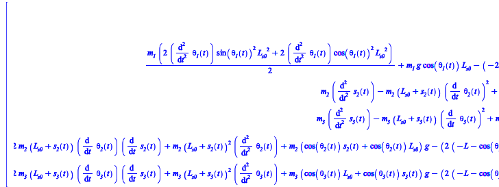 | (6.3.1) |
| > | ALG := <
dae_sys[1], dae_sys[2] >; |
| 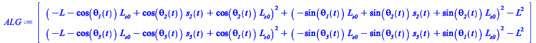 | (6.3.2) |
| > | ODE := <
dae_sys[3], dae_sys[4], dae_sys[5], dae_sys[6], dae_sys[7] >; |
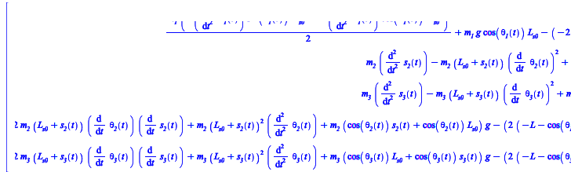 |
(6.3.3) |
| > | SS_DIFF_TO_DOT := diff(s__2(t),t)=x1(t),
diff(s__3(t),t)=x2(t), diff(theta__1(t),t)=x3(t), diff(theta__2(t),t)=x4(t), diff(theta__3(t),t)=x5(t), diff(x1(t),t)=x1dot(t), diff(x2(t),t)=x2dot(t), diff(x3(t),t)=x3dot(t), diff(x4(t),t)=x4dot(t), diff(x5(t),t)=x5dot(t); |
| 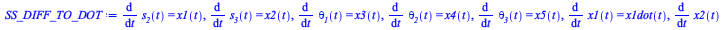 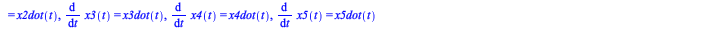 |
(6.3.4) |
| > | RM1:=x3dot(t)=solve(dae_sys[3], diff(theta__1(t),t,t)); |
| 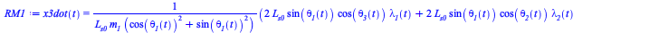 |
(6.3.5) |
| > | RM2:=x4dot(t)=solve(dae_sys[6], diff(theta__2(t),t,t)); |
| (6.3.6) |
| > | RM3:=x5dot(t)=solve(dae_sys[7], diff(theta__3(t),t,t)); |
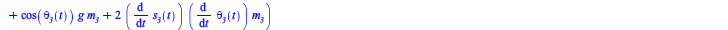 |
(6.3.7) |
| > | RM4:=x1dot(t)=solve(dae_sys[4], diff(s__2(t),t,t)); |
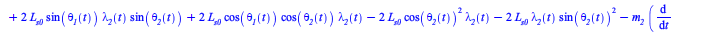 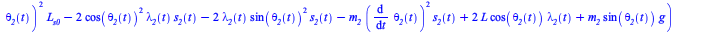 |
(6.3.8) |
| > | RM5:=x2dot(t)=solve(dae_sys[5], diff(s__3(t),t,t)); |
| (6.3.9) |
| > | REMOVE_DOT:=subs(SS_DIFF_TO_DOT,[RM1,RM2,RM3,RM4,RM5]); |
| 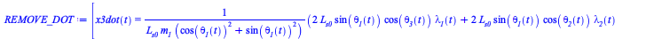 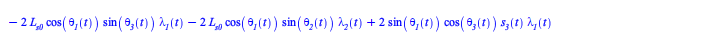 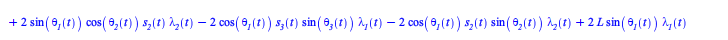 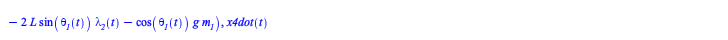 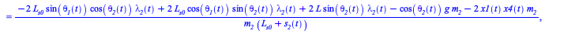 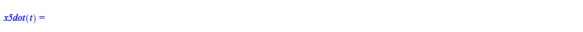 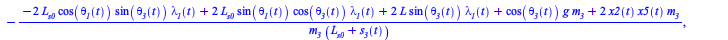 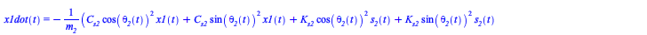 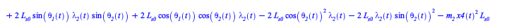 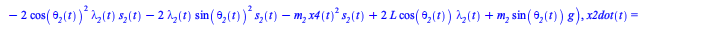 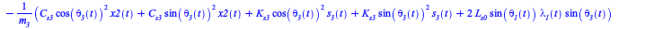 |
(6.3.10) |
| > | ALG := subs(SS_DIFF_TO_DOT, convert(dae_sys, list)); |
| 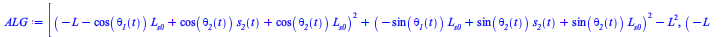 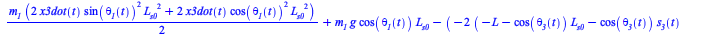 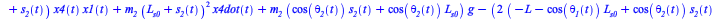 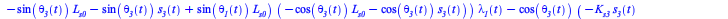 |
(6.3.11) |
Reduce index by one [1]
Reduce index by one [2]
Test forward integration and plots